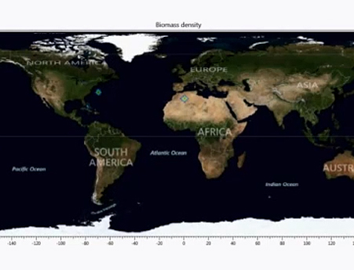

Videos
-
Global Variation in Emergent Dynamics
This video shows the marked variation that in the emergent dynamics of plant matter, herbivores, omnivores, and carnivores, across the globe. The variation is especially marked between land and sea, but within these realms these is also wide variation, due to geographical variation in climate, ocean currents, mixing depth and other factors.
-
Seasonality of Total Animal Biomass
We have begun to examine the food webs that emerge from the Madingley Model. Doing so requires that we sample from the ‘virtual ecosystem’ in a way that is analogous to the way that ecologists sample real ecosystems – so that we can compare like with like. Work in collaboration with Cesar Flores, Atlanta Tech.
-
Scaling
In this video, Drew Purves discusses the computational approaches used to make the modelling possible, including the use of the cohort approximation, which allows the model to be defined at the level of the individual organism, but simulated for enormous numbers of those individuals.
-
Death
In this video, Tim Newbold discusses our approach to modelling mortality.
-
Eating
In this video, Tim Newbold discusses our approach to modelling the fundamental ecological process of eating, which includes herbivores eating plants, carnivores predating on other animals, and omnivores doing both.

Comparing Predictions to Reality
In this video, Mike Harfoot briefly outlines how we have compared the predictions of the Madingley Model to reality, at the scales of individuals, through ecosystems, and up to geographic scales. For more details, see our PLOS-Biology paper.
-
Does the Model Really Cover ‘All Life on Earth’?
In this video, Drew Purves discusses just how much of the world's life is included in the model, and which ecological processes are included. As Drew says here, the model is 'general, in the sense that it can be applied to the majority of the world's ecosystems on land, in the ocean and in freshwater; and has a sufficiently rich set of ecological processes, and therefore ecological outputs, that it can be interfaced with the majority of ecological research, and the majority of conservation work and conservation questions'.
-
Madingley and the Science-Policy Interface
In this video, Neil Burgess outlines how the General Ecosystem Models (GEMs), such as the Madingley Model, might feed into the international policy mechanisms for protecting biodiversity at global scales -- and to the protection of biodiversity at more national and local scales.
-
The Abiotic Environment
In this video, Mike Harfoot outlines the domain over which it is possible to run the model -- this can vary from a single location, through a small grid covering a local region, to a grid covering the whole globe -- and the abiotic environmental factors that affect the ecological processes, and hence the outcome of the model.
-
Future Directions
In this video Drew Purves outlines some of the many exciting ways in which in the Madingley Model could be improved or extended.
-
Reproduction
In this video, Derek Tittensor gives a detailed explanation of the ecological process of reproduction, whereby existing adult individuals create juvenile individuals.
-
Dispersal
In this video, Derek Tittensor describes how we deal with the ecological process of dispersal.
-
Madingley Model: A New Tool For Conservation
In this video Lucas Joppa explains how the Madingley Model provides a new simulation environment for addressing conservation questions, such as the effect of invasive species or habitat loss.
-
Madingley Model: Plants
In this video, Matthew Smith explains how the Madingley Model handles the organisms that sit at the base of almost all food chains on earth: plants.
-
Madingley Model: Interactive Visualization
-
First Advective Dispersal Experiment
We connected the Madingley ecosystem model up to ocean current data, and seeded two points (one off the eastern coast of North America, one off the eastern coast of Africa) with thousands of cohorts to see how they would be dispersed. The colours in the video indicate the density of individual cohorts.
-
Second Advective Dispersal Experiment
The second advective dispersal experiment was much improved in terms of the speed that cohorts get moved by the directed current flow, but still has issues in that the area that they occupy collapses down to a few gyres. This indicated that there were still issues in the balance between advective (directed) and diffusive (random / turbulent) processes.
-
Third Advective Dispersal Experiment
The third advective dispersal experiment showed a much greater spread of cohorts, with particles reaching all ocean basins. Things are looking up! But of course there are other types of dispersal and biological behaviour sitting on top of these, and this is where we turned our attention next.
- 
Responsive Dispersal Experiment
Adult organisms were given several types of responsive (or 'behavioural') dispersal that are based on their current biological environment. In particular, if there is a lack of food and they are starving, then they will attempt to disperse elsewhere to find something to eat. They may also disperse if their density within a grid cell is very low -- this represents movement to find a mate.
-
Random Dispersal Experiment
Juvenile mobile organisms disperse from their grid cell of birth using a random walk process, where the probability of a cohort dispersing from a grid cell is dependent on their body mass. We make the assumption that larger, heavier organisms are likely to be more mobile. In this video, we release thousands of juvenile cohorts from a single point and check that their dispersal is random from the point of origin.
-
June 2012 Early Global Log Biomass Density
We have coupled all the ecological processes within grid cells and the process of dispersal between grid cells and have produced a first simulation of nearly the entire globe*. We are excited to see the model running for all ecosystems, globally and to see some some realistic patterns of and spatial heterogeneity and seasonal biomass fluctuations emerge from a uniform biomass distribution with which the model was initialised.
-
Adult Juv Body Mass Evolution


{kind=link}
{kind=link}
{kind=link}
{kind=link}
{kind=link}
{kind=link}
{kind=link}
{kind=link}
{kind=link}
{kind=link}
{kind=link}